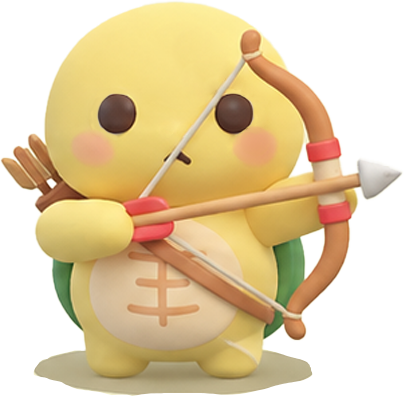

서기 900년 견훤 대왕님은 전주(완산주)에 입성해 후백제를 세웠어요. 백제의 옛 영광을 되찾겠다는 선언에 백성들이 성문 밖까지 나와 환영했답니다!
🎬 후백제 역사 시네마
팝콘 냠냠~ 나를 터치하면 시네마 역사 팁도 알려줘!
🏹 낙수정 신궁 미션 안내
신궁이라 불렸던 견훤 대왕님처럼 5개 과녁을 맞혀볼까? (터치해봐!)

🎯 좌우 과녁 탐색 및 조준 안내
• 좌우 둘러보기: 휴대폰을 왼쪽, 정면, 오른쪽으로 둘러보며 숨겨진 5개 관문을 찾아내세요!
• 과녁 전신 쓰러짐: 화살을 당겨 장력을 모은 뒤 명중시키면 과녁이 통째로 쿵 쓰러집니다!
• 방향 나침반: 상단 현무랑이 가장 가까운 관문의 방향을 실시간으로 알려줍니다.
🏹 화살: 15
🎯 격파: 0 / 5
🧭 주변의 과녁을 조준 중...
휴대폰을 좌우로 천천히 둘러보며 조준하세요!
🎉 미션 클리어! 낙수정 뱃지 획득!
견훤 대왕님도 감탄하실 명궁이야!! 낙수정 수호 뱃지를 획득했어!
🎒 현무랑의 후백제 뱃지 도감
낙수정
✅ 획득 완료 (터치해설)
동고산성
🔒 미개방 (터치해설)
중바위
🔒 미개방 (터치해설)
동고사
🔒 미개방 (터치해설)
💡 뱃지를 터치해보세요!
낙수정·동고산성·중바위·동고사에 담긴 견훤 대왕님의 후백제 역사를 현무랑이 설명해 드려요!